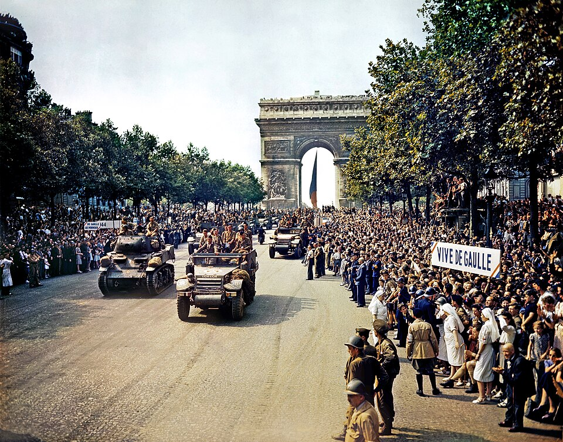

⛏I drew a straight line of cobblestone blocks.
私は丸石ブロックで直線を引きました。
aɪ druː ə ˈstreɪt̚laɪnəv ˈkoʊbəlˌstoʊn ˈblɑks
- straight の /t̚/ が line の /l/ に連結
- line の /n/ が of の /ə/ に連結 [ˈlaɪnəv]
アイ ドゥー ア ストレイッラインアヴ コーバルストーン ブラックス

⛏I drew a straight line of cobblestone blocks.
私は丸石ブロックで直線を引きました。
⛏Follow the line of redstone torches to the secret room.
レッドストーントーチの直線に沿ってシークレットルームに行ってください。
⛏Players are lining up to join the server.
プレイヤーはサーバーに参加するために列を作っています。
I drew lines on the map to plan our routes.
地図に線を描いてルートを計画しました。
These lines represent the redstone circuit design.
これらの線がレッドストーン回路の設計を表しています。
He lines up the blocks in a perfect row.
彼はブロックを完璧な列に並べています。
The map lines show the boundaries of our land.
その地図の線が私たちの土地の境界を示しています。
We lined the walls with oak wood for our cabin.
キャビンの壁をオーク材で装飾しました。
She lined up the chests to store resources.
彼女はリソースを保管するためにチェストを一列に並べました。
The path was lined with lanterns throughout the night.
その小道は夜通しランタンで装飾されていました。
We have lined the mine entrance with reinforced stone.
鉱山の入口を補強された石で装飾してあります。
Lining the pool with dark blocks creates depth.
プールを暗いブロックで装飾することで奥行きが出ます。
They are lining up resources for the next building project.
彼らは次の建築プロジェクトのために資源を整理しています。
⛏All players should line up at the meeting point.
すべてのプレイヤーは集会地点に列を作るべきです。
⛏Hundreds of players are in line to enter the new server.
新しいサーバーに参加するために、数百人のプレイヤーが列に並んでいます。